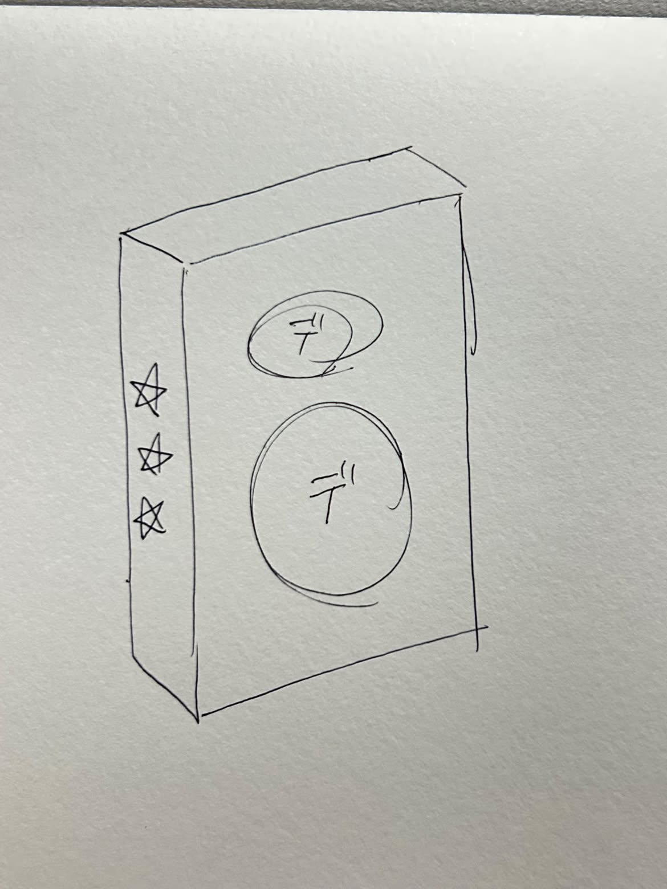
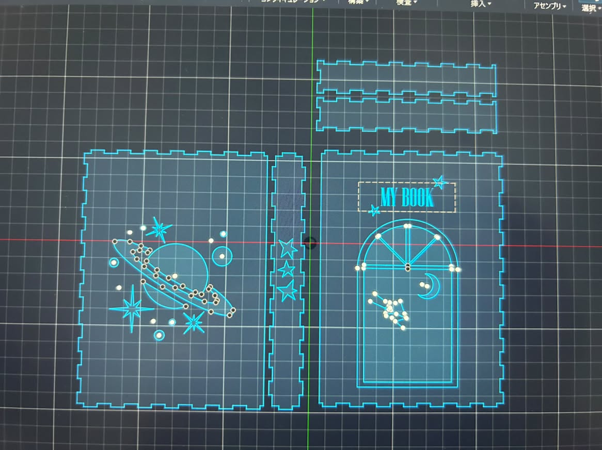
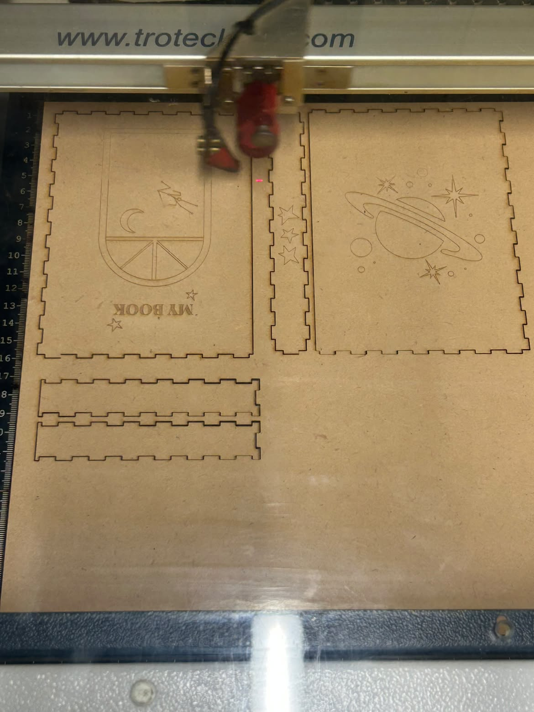
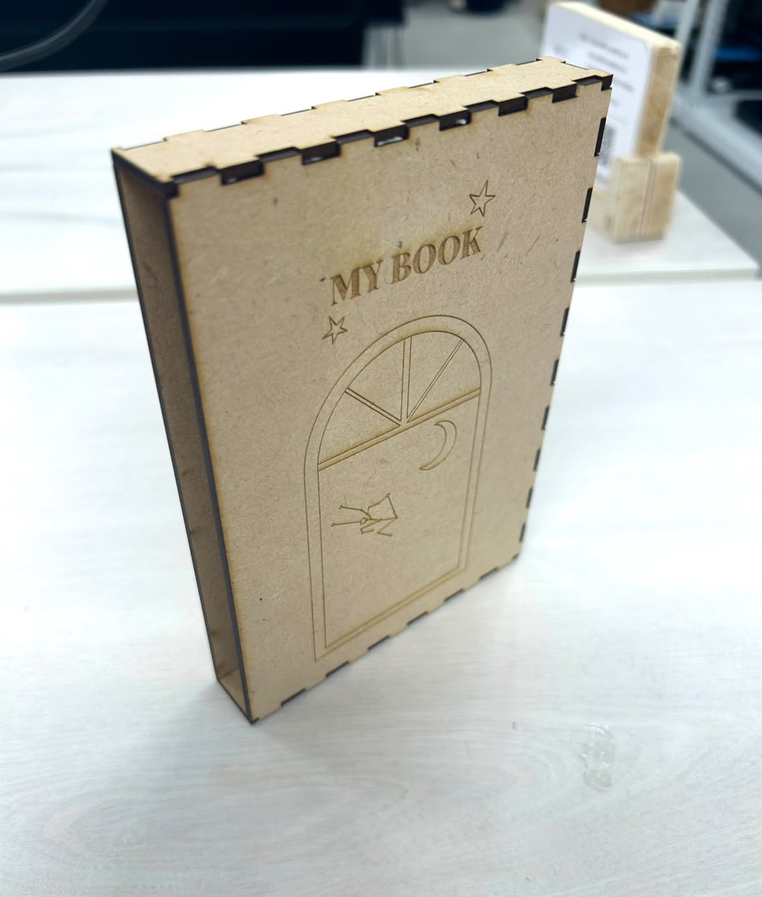
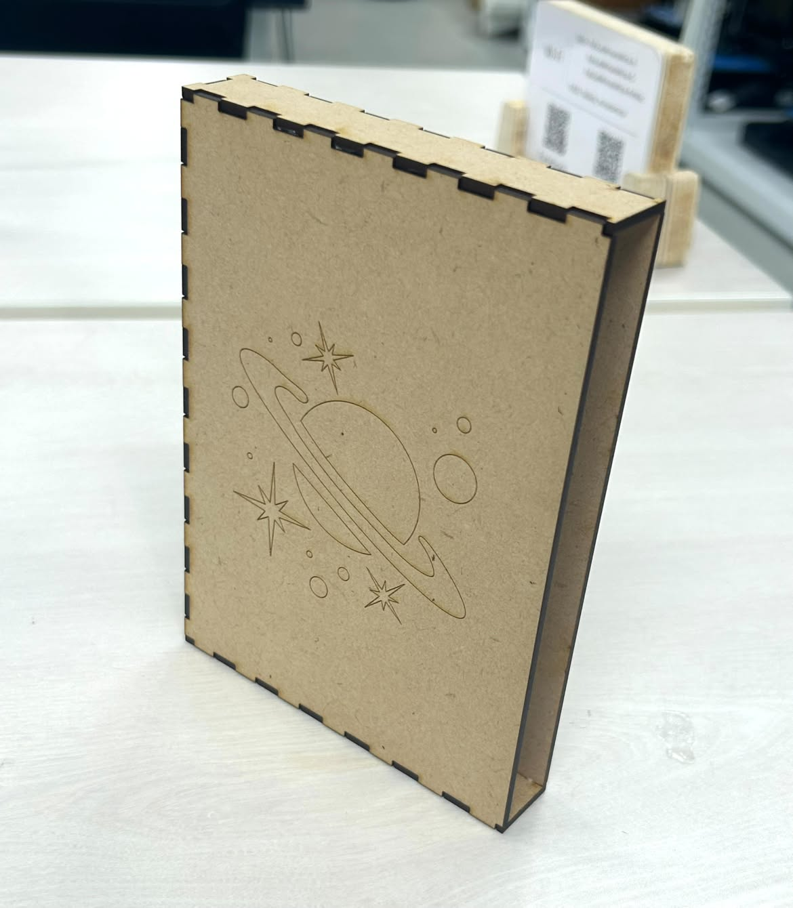
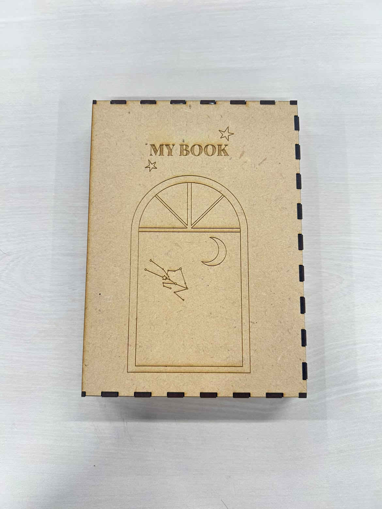
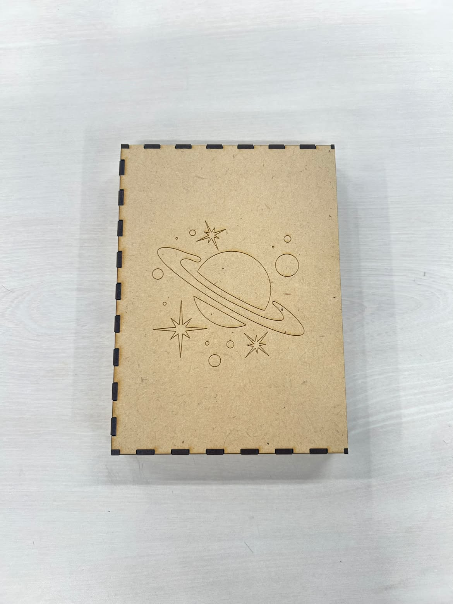

今回はレーザーカッターを用いてブックケースを作成しました。
読書が好きなのでよく本を持ち運ぶのですが、バッグの中でページが折れてしまったり、曲がってしまうことが多くありました。
そこで、本を守るためだけでなく、家の本棚に飾っても可愛いブックケースを作成しました。
本を読み終わった後の余韻と宇宙の途方のない感覚が似ていると感じるので、デザインは宇宙をテーマしました。

スケッチ

制作過程

レーザーカッター



